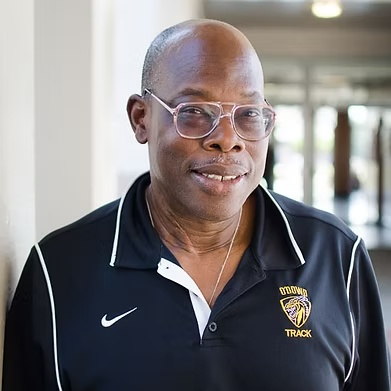

46 years in classrooms across California and the world. Thousands of students who left knowing more —
about history, about America, about themselves. This is his story.

1986
O'Dowd — Then & Now
The Man Behind The Platform
Meet Mr. Green
Everyone's favorite history teacher · dedicated coach · difference maker
His full name is Anthony Martin DePorrus Green — named after two African Saints,
St. Anthony of Egypt and the African-Portuguese Saint Martin DePorrus. He was born on the Portuguese
island of Terceira, became an American citizen at 18, and brought with him a lineage that is itself
a living history of Black America. For 46 years he has taught African American history in classrooms,
universities, and communities across California and the world — and he is not done yet.
He grew up in the Floyd Terrace Housing Project in Vallejo, California, where his breakfast program
was connected to the Black Panthers — and where he was first taught Black History. His neighborhood
athletics were organized by mentors from Alpha Phi Alpha through the Omega Boys Club.
He was introduced to athletics and Black History at exactly the same time.
That parallel has never left his teaching.
Since 1986, he has taught at Bishop O'Dowd High School in Oakland — one of California's most
distinguished National Blue Ribbon institutions. He is one of the founding teachers of
the College Board's Advanced Placement African American Studies course, works with the
College Board on curriculum development and AI policy, and has been invited to present before
the California State Assembly, the Black Caucus, Stanford's Riles Conference, the University
of Ghana, the NCAA Black Student Athlete Summit, the Chan Zuckerberg Initiative, and UC Davis,
among many others.
He has been married to the love of his life for 40 years — his wife works alongside him as
Assistant Activities Director and Events Planner at O'Dowd. His daughter is a high-level
executive at Apple. His son is an Oakland firefighter and paramedic. He coached in his
neighborhood specifically to create a positive environment for young men caught in drugs
and violence — and has maintained those relationships for decades. He recently learned that
a young man he once coached off a corner has worked at the same hospital for 20 years.
Most recently, he was honored with the
Vanguard Award
by The Dr. Betty Shabazz and Malcolm X International Education Institute in Harlem, New York —
recognized as a cultural leader, educator, and community advocate dedicated to
intergenerational dialogue and the empowerment of the next generation of decision makers.
46
Years Teaching Black History
7
Super Bowl Players Coached
94%
AP Exam Pass Rate
Where He Comes From
His Family, His Foundation.
His stepfather's father was lynched when he was 15 years old in Scotlandville, Louisiana.
Two years later, he was drafted into the Marines. He served as a stretcher-bearer at Iwo Jima —
collecting the bodies and body parts of fallen white GIs while under fire, never receiving
recognition for that sacrifice. He later helped retrofit Air Force One after the assassination
of President Kennedy to shield Lyndon B. Johnson from harm, and was personally awarded by Johnson
for his efforts. He served in three wars. His story of service, survival, and erasure lives in
every lesson Mr. Green has ever taught.
His mother was a 1950 graduate of Florida A&M University and a member of Sigma Gamma Rho sorority.
She was politically active throughout her life — working with the NAACP, voting rights organizations,
the local food pantry, and elderly care programs. She personally paid the college tuition of
25 students from her community. Mr. Green's love of community service, he says, is tied
directly to her example.
Mr. Green teaches through the Kemitic Philosophy of MAAT — 42 principles
focused on balance of the whole person, reaching human potential through effort,
focus, and morality. His courses — African American History, The Rise of Black Nationalism,
U.S. History, World History — all teach the same fundamental truth: what we know as "race"
is a man-made idea with no scientific validity. Education and community activism are the keys
to civic virtue and to healing the Republic.
Mr. Green recently served as a historian reviewer on the DC Comics Superman Graphic Novel
"Superman Smashes the Ku Klux Klan" — a work that tells heroic stories of Black
servicemen. In a full-circle moment, DC Comics agreed to include a photograph of his stepfather
as a 17-year-old draftee inside the book — recognition, finally, for a man whose sacrifice
was never acknowledged in his lifetime.
A Living Legacy — Founded in the 1980s
Oldest in the Bay Area. Oldest Continuously Running High School BSU in America.
Mr. Green founded the Bishop O'Dowd Black Student Union in the early 1980s — through the mentorship of Dr. Oba T'Shaka, Dr. Richard Navies, and Dr. David Skinner. It never stopped running.
Decades later, it remains an active, student-led institution that has brought civil rights icons,
scholars, activists, and community leaders into a high school auditorium in Oakland, CA.
What began as an act of advocacy became a permanent feature of one of California's most
respected academic institutions. That is not an accident. That is the result of one person
who believed students deserved access to their full history — and built something to give it to them.
Then & Now — From the Yearbooks
Early BSU · O'Dowd
"I Am Somebody" — the BSU in its founding years
BSU · Giving Students Unity & Confidence
Culture unification as the core mission — from the O'Dowd yearbook
Black History Month Assembly
Mr. Green educates the student body on the history of hip-hop
They Came to His Classroom
Civil Rights Figures Who Have Presented in His AP African American History Class
Mr. Green's classroom became a meeting place for activists, organizers, and leaders from across the Bay Area. Students heard firsthand stories of struggle, resistance, and change — lessons that inspired a generation of O'Dowd students to take pride in their history and responsibility for their future.
Watani Stiner
US Organization · Black Nationalist Movement · Co-Founder of Kwanzaa
Original member of US, the Black Nationalist organization that gave the world Kwanzaa.
An original member of US — the Black Nationalist organization founded by Maulana Karenga — Stiner was part of the movement that gave the world Kwanzaa, the pan-African holiday now celebrated by millions. The FBI's COINTELPRO program deliberately targeted and dismantled US through covert harassment and manufactured conflict, a documented chapter of government-sanctioned suppression of Black political organizing in America.
Oakland Brown Berets · Personal Security for Famous Black Panther Bobby Seale
Founding member of Oakland's Brown Berets, initiating the Black and Brown solidarity movement.
One of the founding members of Oakland's Brown Berets, Lorena served as personal security for Black Panther Party co-founder Bobby Seale. The Brown Berets stood in solidarity with the Panthers in the belief that the struggle for equality was inseparable across Black and Brown communities — a coalition that the establishment feared and worked to suppress.
Spoke to students in Room 213 — Mr. Green's classroom.
Gloria Arellanes
Brown Beret · First Female Minister · Founder of La Causa
The first woman to serve as minister in the Brown Berets. She didn't just hold a title — she built free clinics, a feminist movement, and a newspaper.
The first woman to serve as minister in the Brown Berets, Arellanes didn't just hold the title — she built infrastructure. She established free clinics serving communities that mainstream healthcare ignored, helped give rise to the Chicana Feminist movement, and founded La Causa, the organization's newspaper that put their mission in print and in the hands of the people.
Spoke in Mr. Green's AP African American History class.
Yuri Kochiyama
Japanese American Activist
A Japanese American interned during WWII who became one of Malcolm X's closest confidantes. When he was assassinated in 1965, she held his head in her lap. She told that story in Room 213 in 2009.
A Nisei — second-generation Japanese American — Kochiyama was interned by the U.S. government during WWII, an experience that forged her lifelong commitment to human rights. She befriended Malcolm X during his years in New York, and on February 21, 1965, she was in the audience at the Audubon Ballroom when he was assassinated. She rushed to the stage and held his head in her lap as he died — a moment captured by Life magazine. In 2009, she told that story in Room 213.
"I didn't wake up and decide to become an activist. But you couldn't help notice the inequities, the injustices. It was all around you." — Yuri Kochiyama, 2004
Scroll down through nearly five decades of milestones — from 2026 back to where it all began
in the housing projects of Vallejo, California. Each entry is a moment where Mr. Green
showed up, did the work, and left something more permanent than a lesson plan behind.
Scroll down to travel back through time
Present Day
The Whole Story Platform Launches
Mr. Green's 46 years of curriculum, field trips, and classroom wisdom become the foundation for a national public history platform — brought forward by a former student who never forgot.
Honored in Harlem for visionary educational leadership and sustained community advocacy — recognized as a cultural leader dedicated to intergenerational dialogue and the empowerment of the next generation of decision makers.
2025
Vanguard Award · Photo Placeholder
Recognition
Provident Credit Union All-Star Teacher Award
Named among the Bay Area's most distinguished educators — joining a list of honorees representing the region's best classroom talent since 2007.
2025
Award Photo Placeholder
AP African American Studies
Redlining & Gentrification Field Trip — Oakland
65 students toured historic North and West Oakland — visiting Lois The Pie Queen, the Black Panther Party museum, and Marcus Bookstore. Projects critiqued by UC Berkeley Urban Geographer Dr. Brandi Thompson Summers.
2024
Field Trip · Photo Placeholder
College Board · Curriculum
AP African American Studies — College Board Certified Nationally
The College Board launches AP African American Studies nationally. Mr. Green is among the founding teachers — having been teaching this material for decades before the College Board formalized it.
2022
College Board · Photo Placeholder
Golden State Warriors
"Impact Warrior" — Community Leadership & Social Justice
The Golden State Warriors recognize Mr. Green as an Impact Warrior for his decades of community leadership and social justice work in Oakland and the surrounding Bay Area.
2019
Warriors Award · Photo Placeholder
City of Oakland
Tony Green Day — Oakland
The City of Oakland officially designates "Tony Green Day" — honoring his decades of coaching, teaching, and community activism that have shaped Oakland youth for generations.
2010s
Oakland · Photo Placeholder
BSU · Civil Rights Speaker
[Notable Speaker — Placeholder]
One of countless civil rights figures, scholars, or activists who came to Bishop O'Dowd to speak at Mr. Green's invitation. Mr. Green — please add names and years for BSU guest entries.
2010s
BSU Event · Photo Placeholder
Milestone
20 Years at Bishop O'Dowd
Two decades at the same institution. By this point, Mr. Green has coached athletes to national championships, built the BSU into a nationally recognized program, and taught thousands of students the history their textbooks left out.
2006
O'Dowd Campus · Placeholder
Athletics · National Championship
Girls Track — National Dual Meet Champions
The 1994 Bishop O'Dowd Girls Track Team, coached by Mr. Green, is named the best small school track team in American history. National Dual Meet Champions. A record that still stands.
1994
1994 Championship Team · Placeholder
BSU Founded · Oakland
Black Student Union — Bishop O'Dowd High School
Mr. Green founds the BSU through the mentorship of Dr. Oba T'Shaka, Dr. Richard Navies, and Dr. David Skinner. It will become the oldest continuously running Black Student Union at a high school in the Bay Area — and no older high school BSU has been documented anywhere in the United States.
1993
BSU Founding · Photo Placeholder
Institutional Recognition
Bishop O'Dowd Named National Blue Ribbon School
The U.S. Department of Education designates Bishop O'Dowd a National Blue Ribbon School. Mr. Green has been building his program here for four years by this point — a cornerstone of the institution.
1990
Blue Ribbon · Photo Placeholder
Oakland
Joins Bishop O'Dowd High School
Mr. Green arrives at Bishop O'Dowd — Social Studies teacher, coach, mentor. He will not leave. The 38-year tenure that follows will define one of the most consequential teaching careers in California history.
1986
O'Dowd Campus · Placeholder
Cupertino, CA — Where It Began
Career Begins — Homestead High School, Cupertino
Mr. Green begins his teaching career at Homestead High School — alma mater of Apple co-founder Steve Wozniak. From Silicon Valley's backyard, he develops the standard of rigor and truth-telling that will define 46 years of teaching.
1980
Homestead HS · Cupertino · Placeholder
Vallejo, CA — The Origin
Grows Up in Floyd Terrace — Black Panthers, Athletics & Black History
In the Floyd Terrace Housing Project in Vallejo, young Anthony Green is introduced to athletics and Black History at the same time. His breakfast program is connected to the Black Panthers. His neighborhood athletics are organized by Alpha Phi Alpha mentors through the Omega Boys Club. Both will shape everything that follows.